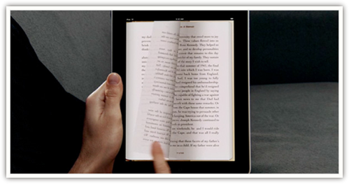

我自己曾经在这篇文章中描述过我对平板设备的期望：
就在我写这篇文章的这个小咖啡馆里，这会儿有三个人正在读着手中厚厚的小说，一个人正在看报纸，两个人正在一边用笔在纸上写写划划一边低声讨论着什么，一个学生模样的人在桌子上摊开好几本教材，在不同的章节之间翻来翻去，用记号笔做着记录。所有这些几百年来人们每天都在做的事情到今天都仍然无法借助电脑的帮助来更好地实现，这真是难于置信的事实。
作为一个科研工作者，这基本上就是我希望 iPad 能够做到的事情。我承认这目标或许难于一蹴而就，但是至少对于某种基本的要求──例如阅读技术文档──它应当能够比较好地取代纸媒介才行。我曾经为了这个目的购买过 Kindle DX，然后在三个小时之后退掉了它。我不能想象用它看完一篇论文会有多么痛苦。（顺便提一句，我不知道那些 Kindle DX 的歌颂者都是怎么想的，但是在我看来，在 2010 年还在用一个小塑料操纵杆上下拨动选取菜单项是一件不能更荒谬的事情了。）
使用 iPad 两天之后，我至少能确定我不会立即退掉它了。
这两天来我基本上一直在试着用它做三类事情之一：上网，阅读和创作。我的结论是，利用目前的 iPad 应用，头一类任务无可挑剔（如果不考虑 flash 和网银的问题），第二类任务令人满意，第三类任务有待加强。
关于 iPad 的上网体验，网上已经有大量的讨论。简而言之，它基本上就是你想象中的那个样子。很多人说：「iPad 只不过就是一个大号的 iPod touch 罢了」。我一直不能理解这种「只不过」的论调，从什么时候人们开始不在乎尺寸了？ iPad 在上网时所能实现的功能和 iPod touch 并无本质不同，但是正是尺寸决定了它的使用体验要华丽得多。
不过关于上网倒是有个技术问题值得在此一提：从 iPad 上市第一天开始，网络上就有用户开始抱怨某些 iPad 的 wifi 信号问题，苹果的官方论坛迅速被沮丧的声音淹没。问题主要集中在两个方面，一是从睡眠中恢复后 iPad 有时不能重新识别出业已连接好的 wifi 网络，二是 wifi 信号强度比同样位置的别的类似设备要弱很多。不幸的是，我似乎就遇到了第二种问题……在我的办公桌前，同样放在面前桌子上的 iPad 和 iPhone 的 wifi 信号一个是一格一个是满格，速度也相差甚远。苹果公司已经部分地承认了这些问题的存在，并且就以上两种情况分别贴出了两篇知识库文章（1，2），不过给出的解决方案基本上相当于「坐得离路由器近一点」之类……我希望此事还有进一步发展。

第二类任务，阅读，一般被认为是更艰巨的挑战。同网站和 blog 不同，人们关于纸媒阅读有丰富的体验和明确的现实期待，iPad 在这个领域里需要解决两个问题，如果它要继承和模拟一部分纸媒体验，它要模拟得多好？如果它要扬弃和重新创造另一部分纸媒体验，它要如何说服用户接受？
iBooks 是苹果自己交出的答卷。我无意撰写一份 iBooks 的评测或者比较它和 Kindle 的异同，我自己的 iBooks 体验完全来自于随机附赠的那本童话小书 Winnie the Pooh。我试读了一阵之后，觉得没什么可挑剔之处，「几乎」和读纸书一样舒服。翻页的效果非常华丽，令人爱不释手。唯一令我有点意见的是那个书架。在我看来，那个书架的设计似乎偏离了苹果一贯的风格，就是说，其自身的存在感过于突出了。如果一个用户碰巧不喜欢黄杨木而喜欢紫檀木，他就会觉得那个书架处处看起来别扭……不过毫无疑问，这不是本质问题。
另一款广泛受到好评的应用是 GoodReader，侧重于 PDF 阅读（也支持其他常见文档格式）。很多人可能和我一样在 iPhone 上早已熟悉了这款应用。在 iPad 的大屏幕上，它表现出了应有的水准，基本上能够实现所有它应当做到的事情。有人对它的翻页略有微词，也许像 iBooks 那样的华丽的卷页会更好？完全可以预期的是接下来一定会有更多软件开发者进入这个领域，无论如何，iPad 简直天生就是为了阅读 PDF 而诞生的。
而对我自己来说，最重要也是最迫切的需求来自于科技文献阅读。之所以同一般的 PDF 区别讨论，是因为我们不仅仅需要显示这些文件，还要方便地检索、查询、下载和管理它们。我手头有几百份 PDF 格式的论文，我自己在电脑上用 Papers 管理这几百份文档。这款软件有 iPhone 版，但是并未引起太大的好评，也许是因为 iPhone 实在不是一个读论文的好工具。它适时地推出了 iPad 版本，我的使用体验是：它可以「部分地」解决科技文献阅读的问题。确切说来：
──它可以很好完成文献随身阅读的任务。虽然屏幕比一张正常的 A4 纸张略小，但是读起来没有困难，所有复杂的公式都清晰可辨。我真的用它读了一篇论文，没有发现什么问题。它可能比真实的纸张稍微费一点眼睛，但是反正我们平时用电脑看论文也一样要费眼睛，而且它的使用姿势比看着电脑屏幕要舒服得多。
──它可以比较好地完成管理文档的任务，但是仍然最好同一个桌面电脑相配合使用（虽然理论上它也可以完全独立使用）。无论如何，因为在 iPad 上用户不被允许直接接触到 PDF 文件，所以有的时候有些事情稍微有点捉襟见肘，不过都不是不可绕过的困难。有两个细节需要在此说明：第一、桌面版 Papers 只有苹果版本，我不知道 windows 用户有没有类似的软件可以使用。第二、桌面版和 iPad 版可以借助无线网络很方便的同步通讯，最好直接用电脑创建无线网络然后让 iPad 加入，速度很快。
──它没有完美解决批注和书签的问题。熟悉科技论文格式的人都知道，很多论文手稿旁边都预留了极宽的空白以供读者批注，这是我们每个人日常研究经验的一部分。这些批注可能是几句话，可能是一些演算、公式、或者是图稿，而由于 iPad 的输入方式所限，所有这些事情用电子键盘做起来都会非常别扭。尽管苹果公司反复宣称平板设备配备电子笔是个蠢主意，但是我还是坚持认为，有些事情不用笔就不可能轻松完成。不过，也许是我的需求过于小众了吧。
我会在接下来的日子里试着用它完成我几乎所有的论文阅读任务。我不确定会不会发现新的问题，如果不会，那很好，我至少可以不必为每次出门旅行时无法阅读论文的内疚感发愁了。
最后一个问题是关于创作──各种形式的创作，包括写文章、制作幻灯片、绘画、作曲等等。我当然不可能一一尝试所有这些可能性，但是我可以很有把握地说，除了绘画问题我不确定之外，一般说来它决不会带来比一款正常的笔记本电脑更好的体验。我曾经试着用 iPad 发表这篇文章本身，结果失败了，有太多的事情不好处理。我也试着用 Keynote 应用来创建幻灯片，结果发现效率比电脑上下降了一倍都不止。也许它的意义充其量在于允许你在报告前的最后一分钟快速修改几个拼写错误和调整几个图片的摆放位置──如果你能确保不把事情弄得更糟的话。甚至把电脑上已经编辑好的 Keynote 文件导入 iPad 也会有问题，它不能支持幻灯中嵌入的视频（这一点我不能理解，因为按说并没有技术上的难度），还有人报告说某些排版可能会乱掉。总而言之，如果你和我一样设想过在讨论会上通过拿出 iPad 作投影来吸引赞叹的目光的话，你可能会有点失望的。
造成这些问题的核心仍然在于输入界面。苹果似乎坚信，一块平板加上人的手指就是一款好的输入设备。这是不可能的，从人类有史以来，除了玩泥巴的小孩之外，所有的创作过程都借助了某种工具，无论是笔还是键盘。iPad 所配备的软键盘不是不能用，但是终究要费力得多。如果是手写汉字，这个问题就更显著，因为虽然识别率很高，但是用手指写字和用笔写字的区别类似于黑板之于纸张，需要调动的是手臂的肌肉而非手掌，所以要费力得多。用它回一封邮件还算有可能，要真正写一篇文章的话，还是考虑蓝牙键盘吧。
以下是几点次要的感想：
关于重量，我不确定会有多少亚洲女孩会愿意用一台 iPad。作为一款手持设备，它太重了。差不多相当于一本比较厚的书的重量。你得时刻把它放在桌子上或者腿上。
关于照片显示和桌面背景，相当华丽。我一般来说不认为把电脑桌面设置成亲人的照片是个好主意，但是 iPad 不同。因为使用姿势的原因，它和一般的笔记本的区别有点像吉它和钢琴的区别，也就是说，它先天具有某种亲密感。如果某个对你来说很重要的人碰巧有一张漂亮的高清晰度照片，把它设成桌面吧，你会发现那是件很浪漫的事。如果你没有，你可以像我一样用某个明星代替……
关于皮套，苹果公司自己推出的官方橡胶套收到不错的评价，其结果是我周围所有的苹果店都卖断了货。我个人觉得皮套是必须的，一个很主要的原因是因为 iPad 很重，所以用久了手上几乎必然全是汗。另外，同 iPhone 相比，iPad 也更不经摔。
关于电池，我没有真的去试验传说中的十小时视频播放是否可能，但是我用它浏览了两三小时的网络和电子文档之后电池寿命下降了不到五分之一。所以，理论上它坚持一趟从中国到美国的国际航班是没问题的。
最后的结论：我会向我的朋友们推荐 iPad 么？我已经开始推荐了。如果你像我一样不排斥新科技产品，如果你有大量电子文档的阅读需求，如果你对 iPhone 的使用体验一直还算满意，那你没有理由不试试看 iPad。当然，如果你愿意等第二代产品推出（或者至少 wifi 信号的问题被解决）之后再做决定，我会觉得那也挺明智的。